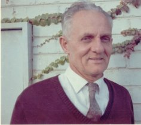
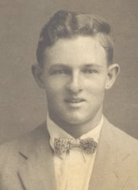

Surnames Individuals Sources Places Gallery

| GRAMPS ID: | I0014 |
| Birth Name: | Jacob Johannes van der Merwe |
| Gender: | male |
| Birth: | 1908-08-27 |
| Occupation: | Policeman |
| Occupation: | Miner |
| Father: | Jacob Jacobus van der Merwe (Birth) |
| Mother: | Barbara Christina Johanna Portwig (Birth) |
| Siblings: |
| Wife: | Ella Susanna Maria Roos |
| Children: |

Een geschenk van u lief moeder aan haar lief seun Japie, Te lees Gezang 73. 11, 12, 13 - 1927-04-19
Jacob Jacobus van der Merwe
Jacob Johannes van der Merwe|
| Georg Portwig
|Barbara Christina Johanna Portwig|
| Fouche